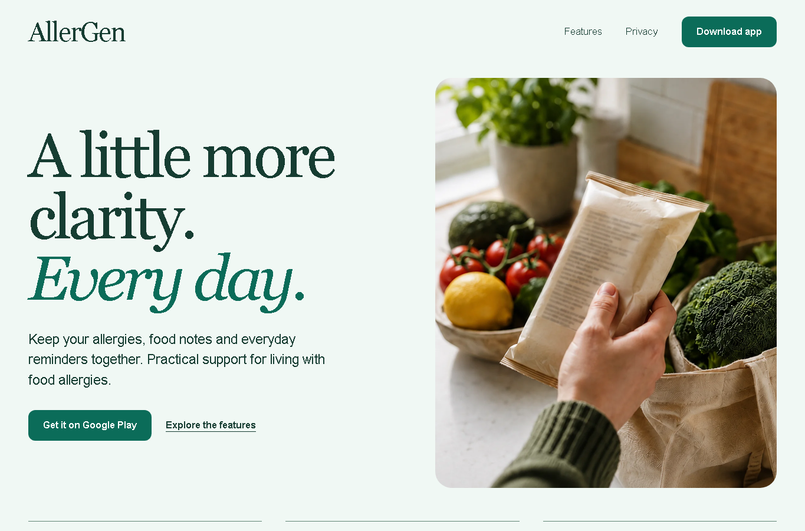
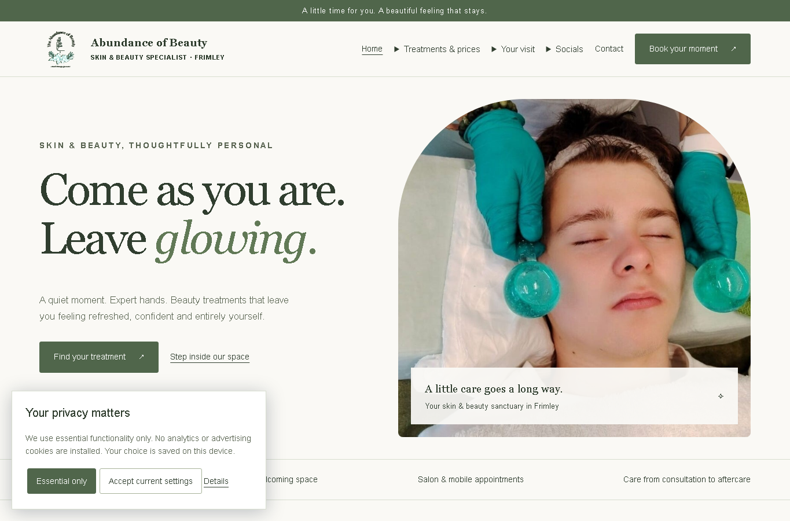
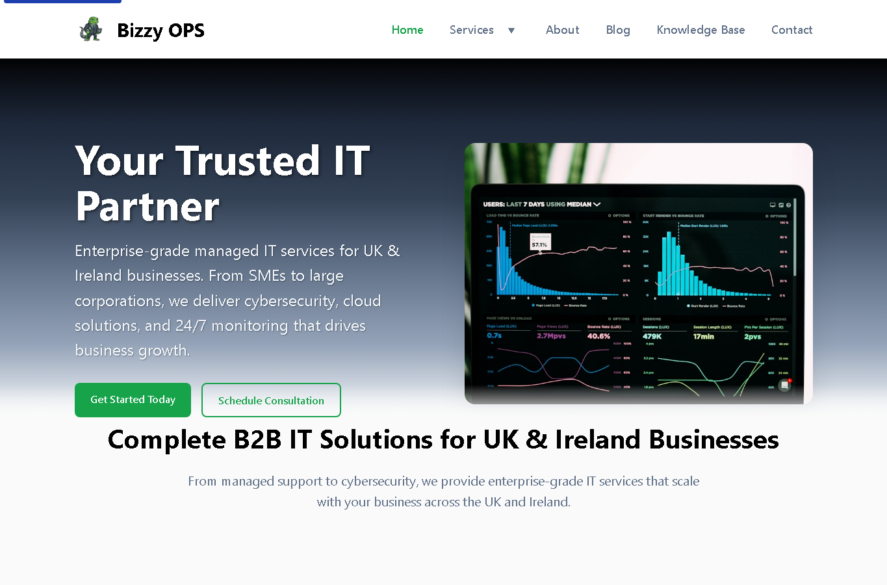

Mobile app
Cyber Sentinel
A mobile security app direction with educational product flows and clear user interface decisions.
The project library shows the kind of interfaces, websites and workflow thinking Octopye can produce. Verified commercial results are not invented.
Mobile app
A mobile security app direction with educational product flows and clear user interface decisions.

Mobile app
A mobile food allergy app experience for scanning labels, managing allergens and giving clearer safety guidance.

Website
A drainage and plumbing website built around emergency intent, service clarity, reviews and booking routes.

Website
An automotive website for maintenance, diagnostics, bodywork and upgrade enquiries around Feltham and surrounding areas.

Website
A beauty and wellness website direction for treatment information, trust, customer reassurance and enquiry routes.

Website
A managed IT services website for UK and Ireland businesses covering IT support, cybersecurity, cloud and network services.

Website
An underground dance radio website for listener routes, brand identity, content and community discovery.
Share the project idea, current website or manual process. Octopye can suggest a practical route without inventing a bigger build than you need.
UK-based digital systems and software development.